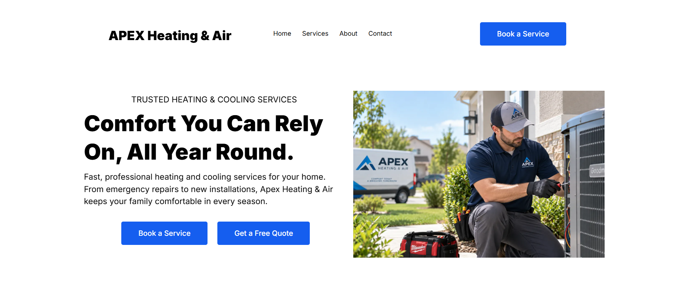
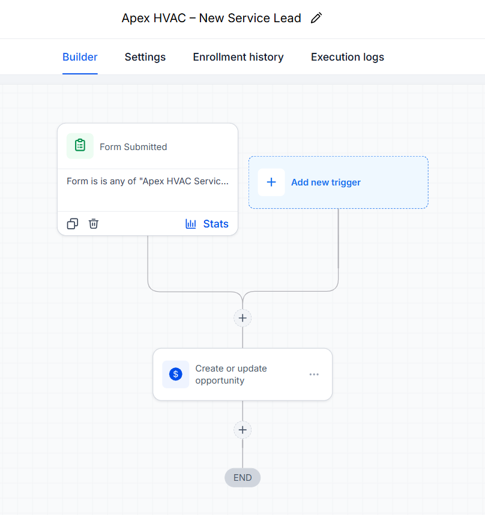

GoHighLevel · CRM
Apex Heating & Air
Website & Lead Management System
Portfolio system connecting an HVAC service website and request form with automated lead handling, opportunity pipeline stages and CRM contact management.
- Service-request capture
- Workflow automation
- HVAC opportunity pipeline
- CRM contact records